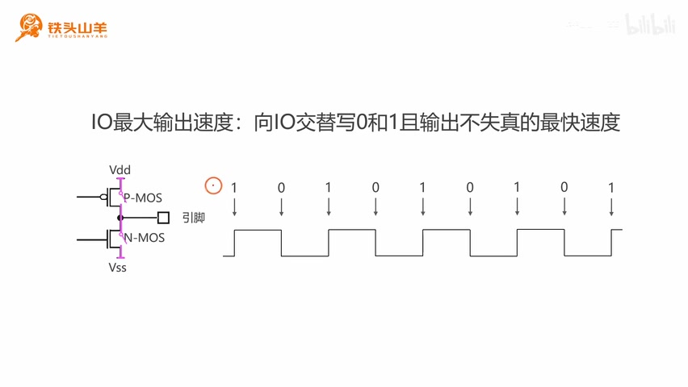
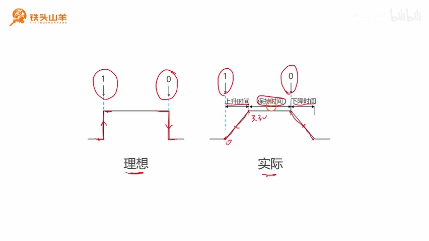
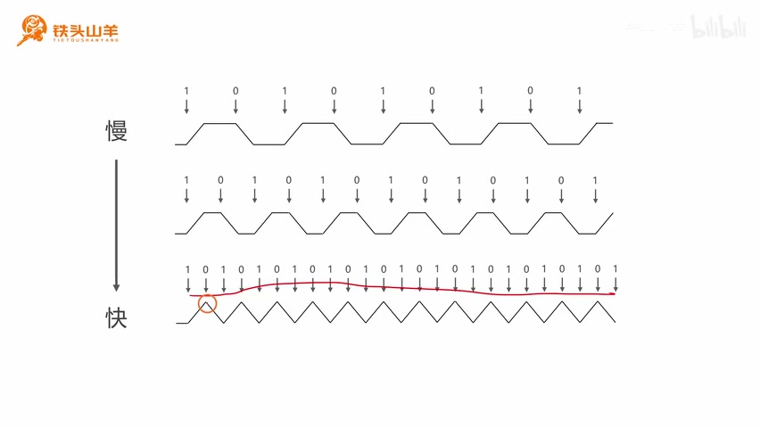
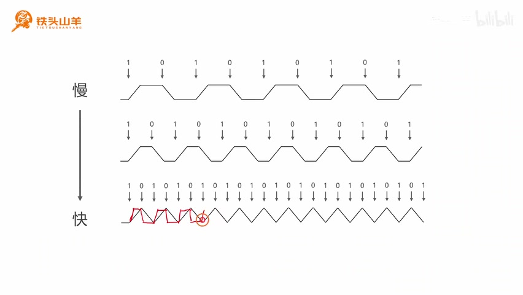
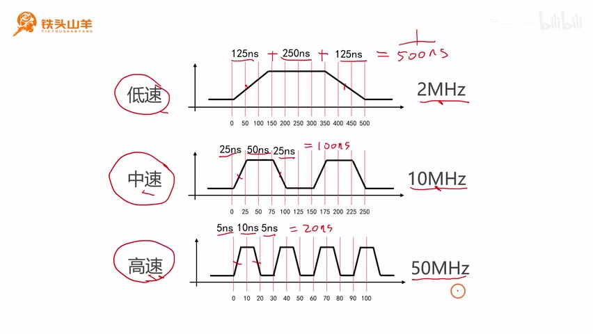
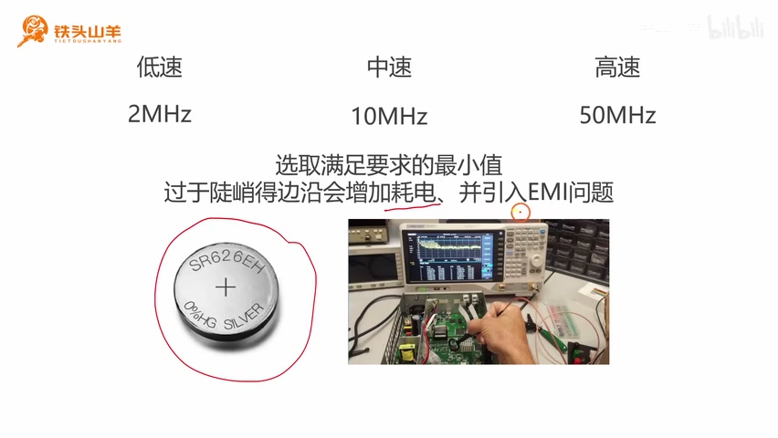
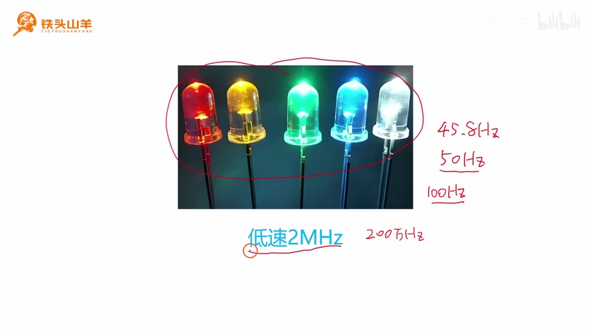
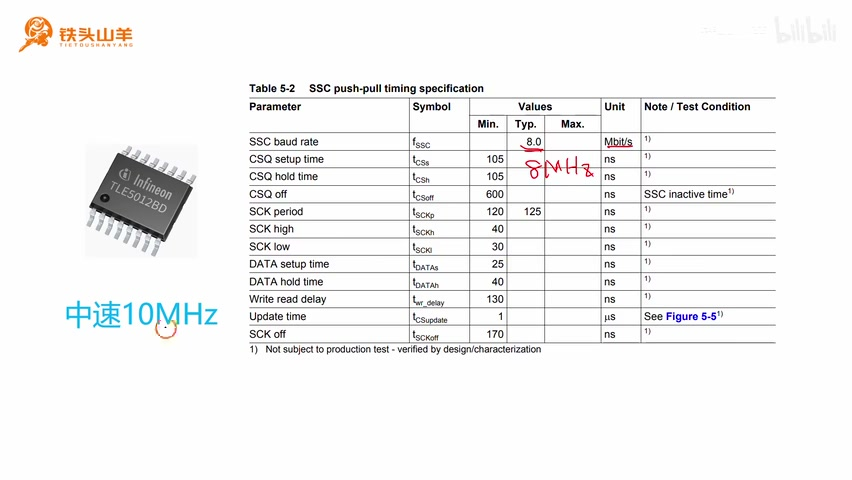
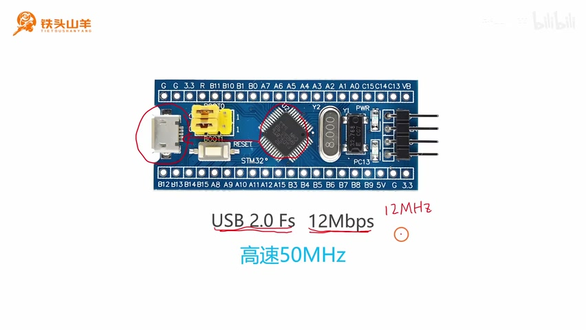

P006 · 2.2 （GPIO）IO的最大输出速度¶
整理方式：清理停顿与明显识别错误的忠实讲稿，保留讲者的论述顺序与表达。来源为 BV11X4y1j7si 第 6 分 P，全片 00:00–10:24.618。
开场与本节安排（00:00）¶
各位同学大家好，我是铁头山羊。今天我们开始学习第二章的第二节，IO 的最大输出速度。
本套视频所需要的所有材料，都包含在这个开发套件包里。大家可以扫描屏幕上的二维码，进入到我们的淘宝店铺来购买它。购买套件之后，你将获得课程所有的课件和源码，还能加入答疑群，和 UP 直接交流。
本期视频我们将分成四个部分来讲：什么是 IO 的最大输出速度；然后第二部分，我将向大家介绍三个概念，这三个概念分别是上升时间、下降时间和保持时间；第三个部分，我们一起来探讨一下，到底是什么原因限制了单片机 IO 引脚的最大输出速度；然后最后一部分，我们一起来看一下，在实际编程的过程中，这个最大输出速度应当如何去选择。
什么是 IO 的最大输出速度（00:53）¶
那么让我们从第一部分开始，先来看一下什么是 IO 引脚的最大输出速度。
首先来回顾一下，上节课我们学习了 IO 引脚的四种输出模式，然后我们知道了什么是推挽输出，什么是开漏输出。我们在讨论这个 IO 最大输出速度的时候，先假定我们的 IO 引脚使用的是推挽输出。
这里简单来复习一下什么是推挽输出。所谓推挽输出，就是这么一对 MOS 管交替导通。如果上面的导通，下面的就断开；如果下面的导通，上面的就断开。我们向这个 IO 引脚写零的时候，输出的就是低电压；写一的时候，输出的就是高电压。这个就是推挽输出。

推挽输出的 P-MOS、N-MOS 结构及交替写 1、0 的输出波形。 · 原片 01:36
我们假定现在引脚的模式是推挽模式，然后我们看一下后边的这张图。在这张图里面，我们首先向这个 IO 引脚写一，写一之后，这个 IO 引脚输出的就是高电压。然后我们再向这个 IO 引脚写零，它输出的就是低电压。我们再写一，又输出的是高电压。我们不断交替着写零、写一，写零、写一。
一开始的时候，我们写零和一的速度非常慢，比如说我们每秒钟写十次，那这个波形输出的是一个非常标准的波形。然后我们加快这个写零和写一的速度，我们把它加快到 100 次，发现这个波形还是正常的。我们继续加快，加快到 1000 次，还是正常的。直到我们加快到 10 万次的时候，发现这个波形不能正常输出了。那么这个 10 万次，就是我们 IO 引脚的最大输出速度。这就是 IO 最大输出速度的一个定义。
上升时间、下降时间和保持时间（02:29）¶
了解了什么是 IO 的最大输出速度之后，我们来看第二部分。我们来解释三个概念，分别是上升时间、下降时间和保持时间。
首先我们先来看左边这张图，左边这张图表示的是理想的情况。在理想情况下，如果我们向这个 IO 引脚写一，那么 IO 引脚上的电压会瞬间从零变到 3.3 伏，也就是从低电压变到高电压。而当我们向这个 IO 引脚写零的时候，那么它的电压会从 3.3 伏立刻变成零，这个是理想的情况。
但是在实际情况下并不是这样的，我们电压的上升需要一个过程。我们可以看到，当我们写一之后，这个电压会经历一段时间，缓慢地上升，从零到 3.3 伏。同样的，当我们写零之后，它的电压也是从 3.3 伏缓慢地下降到零，所以会有这么两个斜坡。
那么我们的电压从零到 3.3 伏的这个时间，我们把它叫做上升时间；而从 3.3 伏降落到零所消耗的这个时间，我们把它称为下降时间。中间输出有效电压的这个时间，我们称为保持时间。这个就是上升时间、下降时间和保持时间的一个定义。

理想波形与实际波形对照，实际波形标注上升时间、保持时间与下降时间。 · 原片 03:40
什么限制了 IO 的最大输出速度（03:45）¶
有了上升时间、下降时间和保持时间的概念之后，我们再来看一下，到底是什么原因限制了我们单片机 IO 引脚的最大输出速度。
首先告诉大家结论，其实就是我们刚才学习的上升时间和下降时间的长短，限制了我们这个 IO 引脚的最大输出速度。
首先我们先来看最上面的这个波形图。这是我们以比较慢的速度，交替地向这个 IO 引脚写零和写一。因为写零和写一的速度比较慢，所以上升时间和下降时间的两个斜坡之间的距离就比较长，所以中间的这个保持时间就会比较长。
而中间的这个保持时间，就是我们输出有效电压的时间。可以看到，输出有效电压的时间，占整个周期的比例会比较大，这就是一种比较好的波形。
现在我们加快写零和写一的速度，可以发现，这个上升沿的斜坡和下降沿的斜坡之间的距离变小了，也就是中间的这个保持时间变短了，那我们输出有效电压的时间也就变短了。
然后我们再加快写零和写一的速度，可以发现上升沿的斜坡和下降沿的斜坡完全靠在了一起，中间的这个保持时间变成零。我们完全没办法向外输出有效的电压了。这就证明，我们写零和写一的速度已经超过了我们这个 IO 引脚的一个最大输出速度了。

写入由慢到快的三组波形：最下面的波形已没有平坦的保持区间。 · 原片 05:10
但是现在，我们既想保持这么快的写零和写一的速度，又想保证这个输出的波形是正常的，那我们该怎么办呢？其实我们可以减小这个上升时间和下降时间的长短。当我们的这个上升时间和下降时间变短的时候，这个斜坡的斜率会变大，也就是会变得更陡。
我们来看一下，当上升时间和下降时间变短之后，它的波形就变成了这个样子。现在我们又能输出有效的波形了。所以可以看得出来，上升时间和下降时间越短，这个 IO 引脚的最大输出速度就越大。

讲者在最下方快速写入的波形上，用红线画出更陡的边沿及平坦区间。 · 原片 05:40
通过刚才的学习，我们已经得出了结论：上升时间和下降时间的长短，影响了我们 IO 引脚的最大输出速度。下面我们来学习一下第四个问题，我们来看一下，在实际编程的过程中，我们应当如何去选取 IO 引脚的最大输出速度。
最大输出速度应当如何选择（06:02）¶
在实际的编程过程中，我们这颗单片机提供给我们了三种最大输出速度可选，分别是低速、中速和高速。
我们首先来看低速的情况。如果选择的是低速，那么它的上升时间和下降时间都是 125 纳秒，中间的保持时间要求最短是 250 纳秒。我们把这三个值加起来，得到的结果就是 500 纳秒。然后我们用一除以这个 500 纳秒，就可以得出这里的最快频率就是 2 MHz。所以低速对应的最大输出速度就是 2 MHz。
然后，如果我们选择的是中速，那么这个 IO 引脚的上升时间和下降时间都是 25 纳秒，中间要求的保持时间是 50 纳秒。这样我们就可以算得出来，它的一个周期最短就是 100 纳秒。然后我们可以算出，此时的最高输出速度是 10 MHz，也就是中速情况下最大输出速度是 10 MHz。
然后我们再来看一下第三种情况，也就是高速。在高速的情况下，上升时间和下降时间都是 5 纳秒，中间的保持时间要求最短是 10 纳秒。所以一个周期最短的就是 20 纳秒，所以我们可以算得出来，它的最大频率就是 50 MHz。也就是说，高速的最大输出速度是 50 MHz。

低、中、高三档的时间示意，分别标有 2 MHz、10 MHz、50 MHz 及周期计算。 · 原片 07:15
现在我们有了三个档位，分别是低速 2 MHz、中速 10 MHz 和高速 50 MHz。但是我们在编程的过程中，应当如何去选择这个档位呢？我们的原则就是应该选择满足要求的最小值。
比方说，我们的这个 IO 引脚要求的最大输出速度是 8 MHz，那么这个时候我们选中速 10 MHz 就可以了，刚好比这个 8 MHz 要大。
有的同学可能会问，为什么我们不直接去选择这种最高 50 MHz 的最大输出速度呢？其实有两个原因，因为当我们选择了更高的输出速度之后，一方面会增加这个功耗。如果我们使用的是电池供电，那这时候我们就应该去考虑功耗。另一方面，过高的最大输出速度会引入 EMI 问题，也就是会对其他的电子元器件产生电磁干扰。

选取满足要求的最小值；课件标注更陡边沿增加耗电并引入 EMI 问题。 · 原片 08:00
所以我们并不是说，选择越高的最大输出速度越好，而是应当选择刚好满足要求的那个最大输出速度。
第一个例子：驱动 LED（08:13）¶
下面我给大家举几个例子。首先我们先来看第一个例子，也就是使用我们的单片机去驱动 LED 的这么一个例子。
首先给大家普及一个冷知识，我们人眼的这个临界闪烁频率是 45.8 Hz，而我们使用的交流电的频率是 50 Hz。所以当我们使用这个 50 Hz 的交流电去点亮一盏灯的时候，我们完全感受不到这个灯在闪烁。
因此，对于我们驱动 LED 的这个例子来说也是一样。一般情况下，我们不会让这个 LED 的闪烁频率超过这个 100 Hz。所以我们一般选择低速 2 MHz 也就足够了，因为 2 MHz 就等于 200 万赫兹，远远比这个 100 Hz 要大。所以一般情况下，我们就选择这个低速 2 MHz 来驱动这个 LED。

LED 示例选用低速 2 MHz，旁边有讲者写下的 45.8 Hz、50 Hz、100 Hz 和 200 万 Hz。 · 原片 09:00
第二个例子：TLE5012B 通信（09:04）¶
然后我们再来看第二个例子。我们来看左边的这张图，这是一颗英飞凌的 TLE5012B 的芯片。这个芯片是一个巨磁阻效应的编码器。这个芯片跟我们单片机使用 SPI 总线进行通信。然后我们查一下它的手册，我们会发现，这个 SPI 总线的通信的波特率是 8 Mbps。这个 8 Mbps，大家可以把它简单地理解为 8 MHz。
所以我们选择这个 IO 引脚的最大输出速度，应当选择中速 10 MHz。10 MHz 恰好比这个 8 MHz 要大一点。

TLE5012B 与 SSC 推挽时序表，表格 SSC baud rate 一行标注 8.0 Mbit/s；左下为中速 10 MHz。 · 原片 09:34
第三个例子：USB 2.0 全速接口（09:39）¶
下面我们再来看第三个例子。在我们这颗 STM32 芯片上，有一个 USB 2.0 的全速接口。在最小系统板上，我们通过这么一个 Micro USB 接口，把这个 USB 2.0 的全速接口给它引了出来。
然后对于这个 USB 2.0 的全速接口来说，它的最大通信的波特率是 12 Mbps，我们可以简单地把它理解为 12 MHz。

STM32 最小系统板的 Micro USB 接口，课件标注 USB 2.0 Fs 12 Mbps 和高速 50 MHz。 · 原片 10:10
因为它的速度达到了 12 MHz，所以这个时候我们再选中速 10 MHz 就不合适了，所以我们只能选择高速 50 MHz。
好的，到这里为止，本期视频的所有内容就都讲完了。感谢大家的收看，我是铁头山羊，让我们下期视频再见。